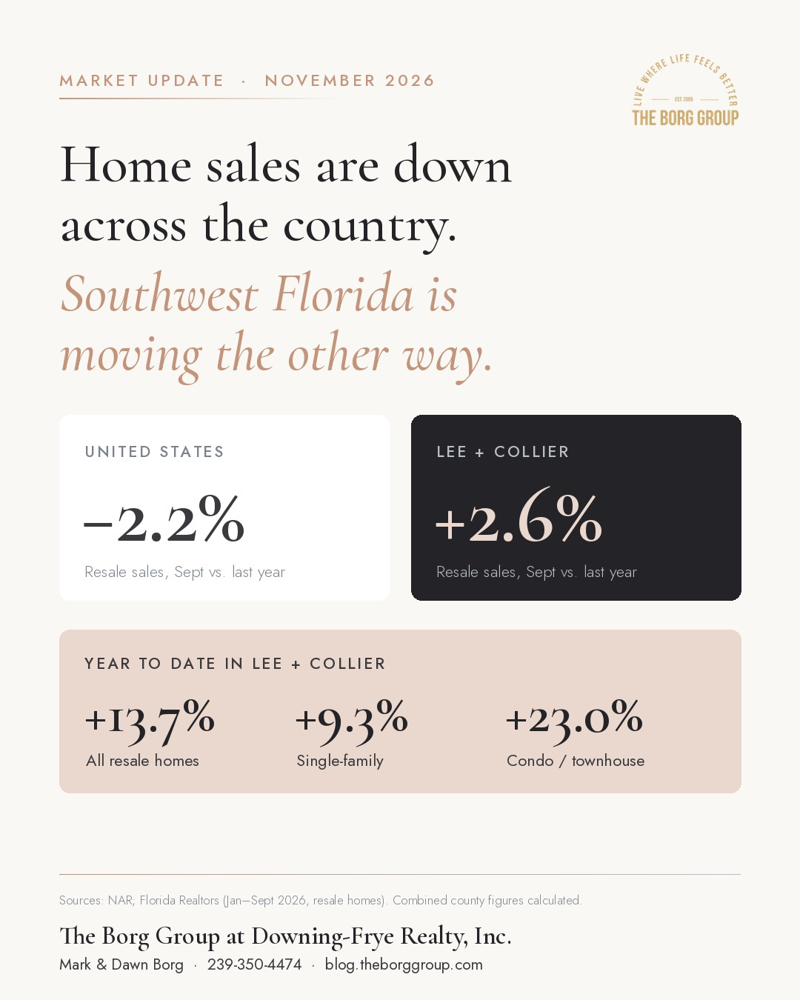

Are home sales down in Southwest Florida like they are nationally?
No. U.S. existing-home sales fell 8.8% year over year in October 2026, their slowest pace since 2010, but Southwest Florida resale sales were up in the latest local data. In September 2026, combined Lee and Collier County resale sales rose 2.6% from a year earlier, and year-to-date sales are up about 14%, led by condos and townhouses (up 23%). Prices are mostly flat, and Lee County condo prices are down almost 9%, which gives buyers real room to negotiate.
If you caught this morning's headlines, you heard that home sales just hit a 16-year low. That's true for the country.
It isn't what's happening in Southwest Florida — at least not in the most recent local numbers.
This is one of the questions we're hearing most right now, from buyers relocating from up north and from homeowners in Bonita Springs, Estero, and Naples deciding whether to list before season. Here's how the numbers actually compare, category by category.
How do Southwest Florida home sales compare with national sales?
Start with the national picture. NAR reported on November 12 that existing-home sales fell 5.5% from September and 8.8% from a year ago, to a 3.75 million annual pace. Single-family sales were down 8.6% year over year, and condo/co-op sales were down 10.5%. NAR's chief economist pointed to mortgage rates at their highest levels since 2000, aside from one month in 2023.
Now compare apples to apples. September is the latest month with both national and local numbers:
| Sales change, Sept 2026 vs. Sept 2025 | United States | Florida | Lee County | Collier County |
|---|---|---|---|---|
| All resale homes | −2.2% | −2.6%* | +2.3%* | +5.0%* |
| Single-family | −1.9% | −3.5% | +0.3% | +2.0% |
| Condo/townhouse | −5.4% | −0.1% | +5.9% | +8.2% |
*Calculated by combining the published single-family and condo/townhouse figures. National figures are from NAR; Florida and county figures are Florida Realtors data by metro area (Cape Coral-Fort Myers MSA for Lee, Naples-Immokalee-Marco Island MSA for Collier).
Put Lee and Collier together and Southwest Florida resale sales were up 2.6% in September while the nation was down 2.2%.
The year-to-date gap is even wider. From January through September, combined Lee and Collier resale sales are up about 14%, compared with about 4% statewide:
- Single-family: up 8.7% in Lee and 11.0% in Collier (Florida: up 3.1%)
- Condo/townhouse: up 25.3% in Lee and 20.5% in Collier (Florida: up 7.1%)
For the earlier Naples-only version of this comparison, see how the Naples housing market differs from the rest of the country.

What's selling in Southwest Florida — and for how much?
Single-family homes
Lee County closed 1,116 single-family resales in September at a median of $375,500, essentially flat from a year ago. Collier closed 365 at a median of $785,000, up 1.6%.
In the Naples area specifically, NABOR reported the September single-family median at $747,500, up 3.1%, with single-family inventory down 16.7%.
Condos and townhouses
This is where the comeback is strongest — and where the pricing story splits.
- Lee County: 343 sales, up 5.9%, at a median of $255,000 — down 8.9%
- Collier County: 342 sales, up 8.2%, at a median of $432,500 — up 4.2%
More buyers are coming back to condos, but in Lee County they're paying less to do it. If you're shopping condos, the association's milestone inspection, structural reserve study, and any pending special assessments matter as much as the price. Our guide to buying a condo in Southwest Florida walks through what to check.
New construction
Nationally, new-home sales ran at a 676,000 annual pace in September, with a median price of $400,400 — down 3.9% from a year ago. Sales in the South, which makes up more than 60% of the national new-home market, fell 6.6% that month.
Locally, there's no clean monthly count. Most builder-direct sales never go through the MLS, so they don't show up in Realtor reports. What we see on the ground is builders competing hard with rate buydowns and closing-cost credits — so compare those incentives against resale prices home by home. Here's how we break down new construction vs. resale in Southwest Florida.
Villas and multi-family
Neither shows up as its own category in public reports. Villas get counted as single-family or condo/townhouse depending on how each listing is classified in the MLS, and 2–4 unit multi-family properties aren't broken out by NAR or Florida Realtors at all.
If you're weighing a villa in a specific community, the countywide numbers won't tell you much. We can pull villa-only sales for the exact communities you're considering.
What does this mean for your move?
If you're buying, you have more negotiating power than you've had in years. National supply is up to 5.1 months, and Lee County condo prices are down almost 9%. But don't assume every segment is soft: Naples-area inventory dropped 17.3% from a year ago, so well-priced homes in desirable communities are still moving. Here's how to negotiate when days on market are rising.
If you're selling, the buyers are here — but they're comparing everything. Pricing right from day one matters more than ever, especially as seasonal residents return between November and April. Our 2026 pricing strategy guide for Southwest Florida sellers covers how to get it right before you list.
A few honest caveats we share with every client:
- 2025 was a weak year to compare against. FGCU reported Southwest Florida condo sales fell 31% in the second quarter of 2025. Being up from a down year is a recovery, not a boom.
- After inflation, prices are softer. FGCU found inflation-adjusted Q2 2026 medians down 4% for single-family homes and 8% for condos.
- The timing gap. National numbers are for October; local numbers are for September. Florida Realtors releases October local data on November 16, and we'll update this post when it does.
A countywide median doesn't buy or sell a house. Your community, your price range, and your timing do — and that's exactly the kind of analysis we run for our clients before any offer or listing goes out. You can also explore our free Southwest Florida housing market tool.
Frequently asked questions
Are home sales down in Southwest Florida?
Not in the latest local data. In September 2026, combined Lee and Collier County resale sales were up 2.6% from a year earlier, while national sales were down 2.2%. Year to date through September, Lee and Collier resale sales are up about 14%. National sales fell further in October, and Florida Realtors releases October local numbers on November 16, 2026.
Which types of homes are selling best in Southwest Florida right now?
Condos and townhouses. Year to date through September 2026, condo and townhouse resale sales are up 25.3% in Lee County and 20.5% in Collier County. Single-family resale sales are up 8.7% in Lee and 11.0% in Collier over the same period.
Are home prices falling in Lee County?
Single-family prices are flat: the Lee County median was $375,500 in September 2026, up 0.1% from a year earlier. Condo and townhouse prices are falling, with a September median of $255,000, down 8.9%. That gap is where Lee County buyers have the most room to negotiate.
Do Southwest Florida sales numbers include new construction and villas?
Mostly no. The Florida Realtors and NABOR figures track resale homes sold through the MLS, and most builder-direct sales never go through the MLS. Villas aren't reported as their own category; they're counted as single-family or condo/townhouse depending on how each listing is classified. A local agent can pull villa-only or multi-family numbers from the MLS for a specific community.
The bottom line
The national headline says home sales are down. Southwest Florida's numbers say buyers are still coming — especially for condos — and they're finding more room to negotiate than they've had in years.
If you're planning a move to Southwest Florida — or you're already here and ready for your next chapter — our free Southwest Florida Relocation Guide is the best place to start. It covers communities, costs, timelines, and everything you need to make a confident decision. Then give us a call at 239-350-4474 to schedule tours or talk through your options. We'd love to help you find the right fit.
Sources: NAR Existing-Home Sales Report, October 2026; NAR Existing-Home Sales Report, September 2026; Florida Realtors September 2026 Metro Area Report; Naples Area Board of REALTORS® (NABOR) September 2026 Market Report; U.S. Census Bureau/HUD New Residential Sales, September 2026; FGCU RERI Southwest Florida Q3 2026 Report; FGCU RERI Southwest Florida Q3 2025 Report.